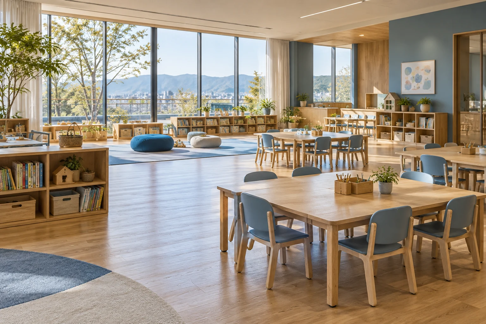
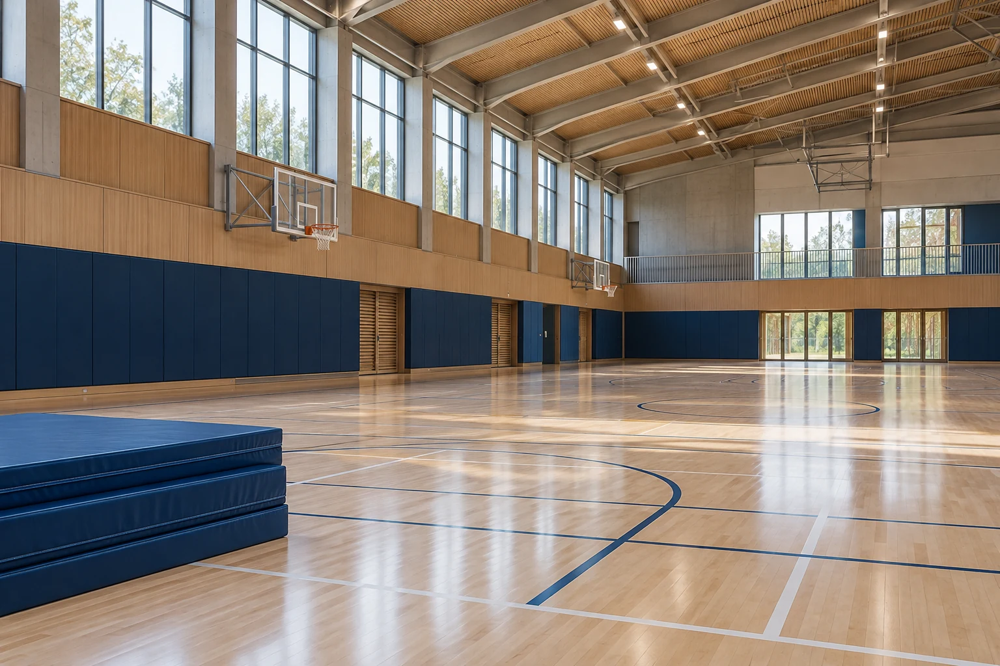
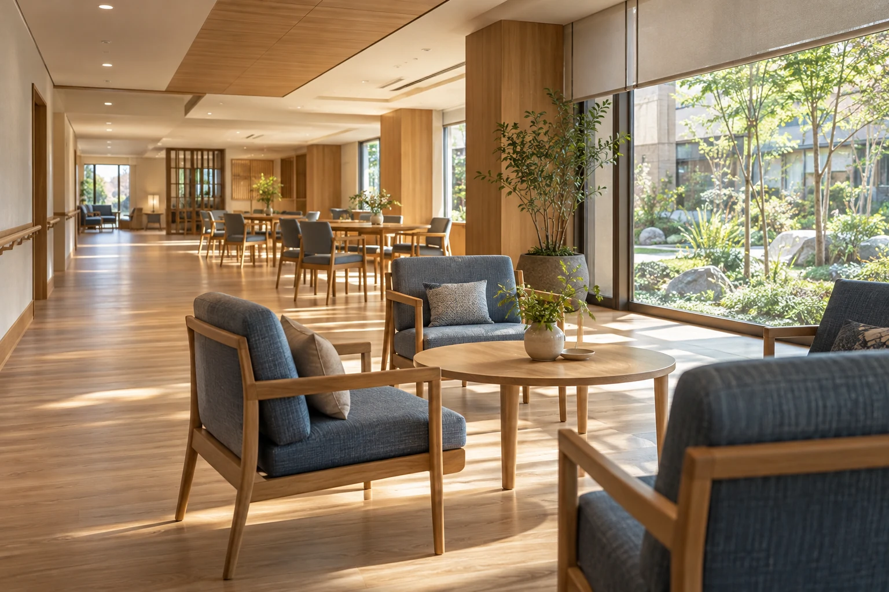
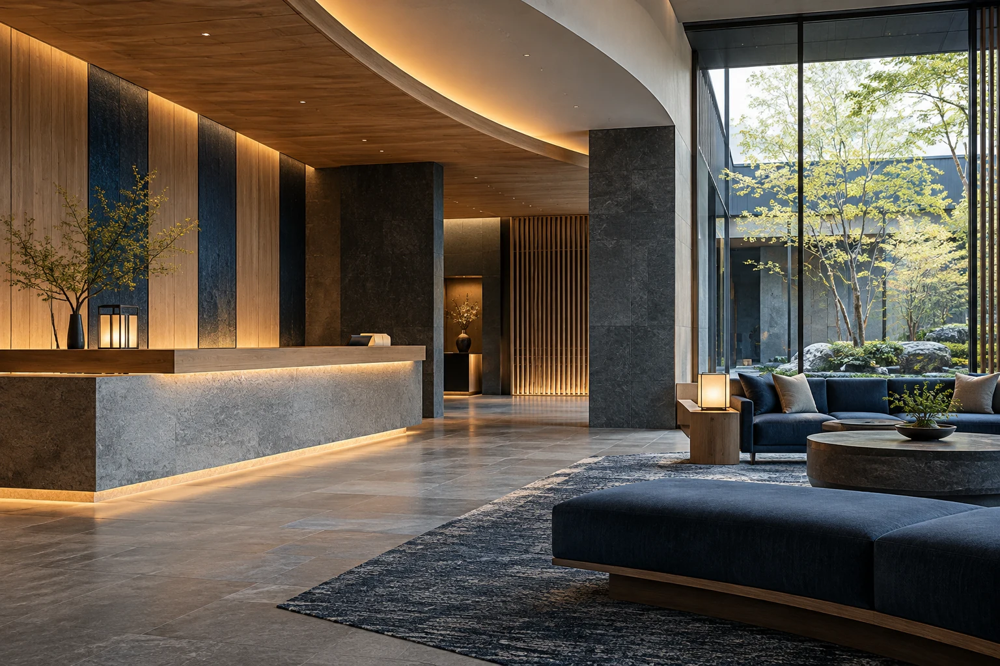

01BCP・マニュアルを
BCP・マニュアルを
つくる・見直す
計画はある。でも、今の現場に合っている？
既存資料と現場の体制を確認し、初動、優先業務、役割分担、連絡の手順を整理。担当者が変わっても共有できる計画を目指します。
支援内容・成果物の例
現状のヒアリング、課題の整理、BCP・対応マニュアルの策定や改訂を支援します。
成果物の例：見直し事項の一覧、役割分担表、初動チェックリスト。作成する資料と支援範囲は、事前に相談して決めます。
SONAE DESIGN 防災・危機対応・BCP支援
人を守る。事業をつなぐ。
現場に必要な備えを、計画から実践まで。
保育・教育 ／ スポーツ ／ 介護・福祉 ／ 宿泊 ／ 一般企業
命を預かる現場に、実行できる備えを。
計画づくりから、職員研修・訓練、継続的な改善まで。01 FIELDS / 対象の施設・業種
あなたの施設・業種を選ぶと、
相談できる支援をご覧いただけます。





02 SERVICES / 支援内容
BCPは、非常時に大切な業務を続けるための計画です。
新しくつくることも、今ある備えの見直しも相談できます。
計画はある。でも、今の現場に合っている？
既存資料と現場の体制を確認し、初動、優先業務、役割分担、連絡の手順を整理。担当者が変わっても共有できる計画を目指します。
現状のヒアリング、課題の整理、BCP・対応マニュアルの策定や改訂を支援します。
成果物の例：見直し事項の一覧、役割分担表、初動チェックリスト。作成する資料と支援範囲は、事前に相談して決めます。
毎年の訓練を、実際の行動につなげたい。
対象者や人員体制に合わせて研修と訓練を設計。「誰が、何を、どの順番で行うか」を確かめ、次の改善につなげます。
成果物の例：研修資料、訓練シナリオ、振り返りと改善事項の一覧。内容は実施前に相談して決めます。
担当者だけで抱えず、継続して整えたい。
計画の点検から、年間の研修・訓練、実施後の改善相談まで。組織の変化に合わせて備えを更新する、月額・年間の顧問支援です。
定期相談、BCP・マニュアルの点検、研修・訓練計画、体制変更への対応など、必要な支援を組み合わせます。
相談の頻度、訪問回数、研修の実施、連絡方法などは契約前に決定します。緊急時の対応を含めるかどうかも、事前に範囲を確認します。
ひとつの研修、既存BCPの見直しからでも。
ご相談・受付状況について
OUR APPROACH / 私たちの考え方
夜間・少人数・責任者不在。普段と違う状況まで含めて整理します。
判断が止まった理由や、足りない情報を訓練で見つけます。
振り返りを、役割や手順の見直しにつなげます。
03 PROCESS / ご依頼の流れ
まずは現状を整理。
支援の内容と費用に合意してから進めます。
施設の種類や体制、既存の計画、困っている場面を確認します。
目的、実施方法、日程、成果物、費用を事前にすり合わせます。
計画づくりや研修・訓練を実施。課題と、次に見直すことを整理します。
支援内容、準備・実施時間、参加人数、訪問の有無などに応じた個別見積もりです。実施地域やオンライン対応も、内容に合わせてご相談いただけます。

相談前に知っておきたいこと
現状と困っていることを整理するところから相談できます。既存の計画があるか、どんな場面に不安があるかをお聞かせください。
職員研修、机上・実践訓練、講師登壇を単独でも相談できます。参加者、テーマ、時間、実施場所に合わせて内容を組み立てます。
施設の種類や現場の状況、希望する支援内容をお知らせください。支援できる範囲と実施方法を確認してご案内します。
地域・法人種別・対象経費・時期によって異なります。本サービスの費用が対象になるとは限りません。公的支援の確認先を掲載しています。
ご相談について
BCPの見直し、ひとつの研修、年間の備えまで。
現場の状況と、いま気になっていることをお聞かせください。
メールアドレス・受付方法は、準備が整い次第こちらに掲載します。現在、このサイトから相談を送信することはできません。
メールで相談する相談時にあると役立つ情報
施設・業種 ／ 困っていること ／ 希望時期・人数